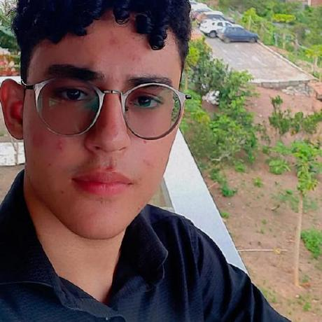

Sobre Mim
Olá! Sou violinista e amo música. Também gosto de jogar xadrez, sou uma pessoa muito social e gosto de me manter ativo participando de diversos esportes. Terminei o ensino médio e curso de Análise e Desenvolvimento de Sistemas (ADS) no ensino superior na UNINTER.
Além disso, gosto de ler e me manter sempre atualizado sobre as novidades em tecnologia.
Repositorios
Contato